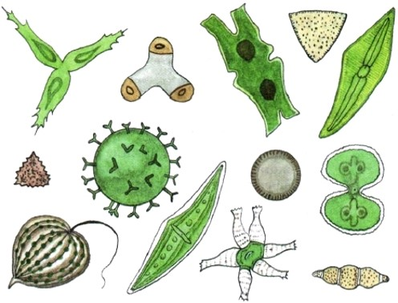
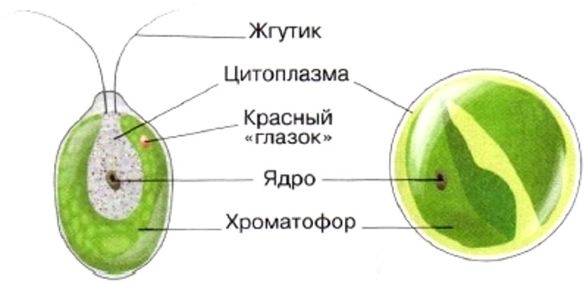
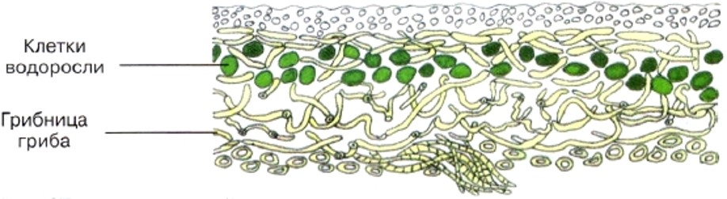
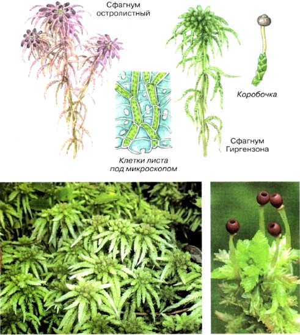
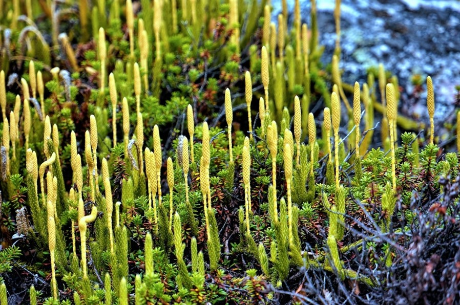
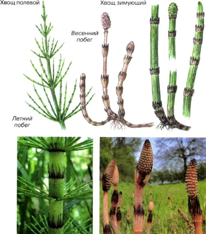
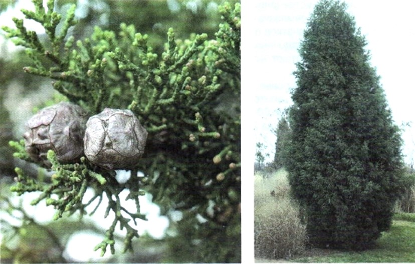
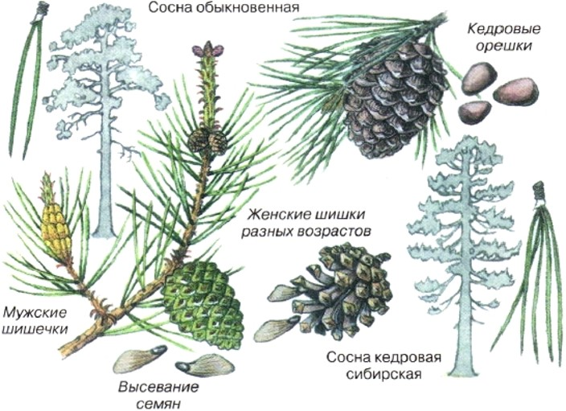
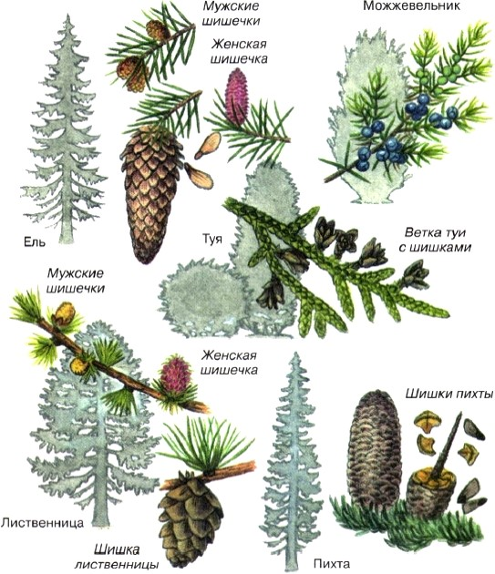

1. Водоросли
Одноклеточные водоросли. Зелёные водоросли обитают в солёной и пресной воде, на суше, на поверхности деревьев, камней или зданий, в сырых, затенённых местах. Виды, живущие вне воды, в период засухи находятся в состоянии покоя. Простейшие зелёные водоросли — одноклеточные.
Снаружи хламидомонада покрыта прозрачной оболочкой, под которой расположены цитоплазма с ядром, красный «глазок» (светочувствительное тельце красного цвета), крупная вакуоль, заполненная клеточным соком, и две маленькие пульсирующие вакуоли. Хлорофилл и другие пигменты у хламидомонады находятся в крупной чашеобразной пластиде, которая у водорослей называется хроматофор (в переводе с греческого — «несущий свет»). Хлорофилл, содержащийся в хроматофоре, придаёт зелёную окраску всей клетке. Ещё одна одноклеточная зелёная водоросль — хлорелла — широко распространена в пресных водоёмах и на влажных почвах. Её мелкие шаровидные клетки видны только с помощью микроскопа. Снаружи клетка хлореллы покрыта оболочкой, под которой находится цитоплазма с ядром, а в цитоплазме — зелёный хроматофор.
Многоклеточные зелёные водоросли. У многоклеточных представителей зелёных водорослей тело (слоевище) имеет форму нитей или плоских листовидных образований. В проточных водоёмах часто можно заметить ярко-зелёные скопления шелковистых нитей, прикреплённых к подводным камням и корягам. Это многоклеточная нитчатая зелёная водоросль улотрикс. Его нити состоят из ряда коротких клеток. В цитоплазме каждой из них расположены ядро и хроматофор в виде незамкнутого кольца. Клетки делятся, и нить растёт. В стоячих и медленно текущих водах часто плавают или оседают на дно скользкие ярко-зелёные комки. Они похожи на вату и образованы скоплениями нитчатой водоросли спирогиры. Вытянутые цилиндрические клетки спирогиры покрыты слизью. Внутри клеток — хроматофоры в виде спирально закрученных лент.
Многоклеточные зелёные водоросли живут также в водах морей и океанов. Примером таких водорослей может служить ульва, или морской салат, длиной около 30 см и толщиной всего две клетки
Наиболее сложное строение в этой группе растений имеют харовые водоросли, обитающие в пресноводных водоёмах. Эти многочисленные зелёные водоросли по внешнему виду напоминают хвощи. Харовую водоросль нителлу, или блестянку гибкую, часто выращивают в аквариумах .
2. Лишайники
Строение и питание лишайников. Тело лишайника — слоевище — состоит из гриба и водоросли, живущих в симбиозе как один организм. Оно образовано переплетающимися нитями грибницы, между которыми расположены одноклеточные зелёные водоросли или синезелёные (цианобактерии). На грибных нитях иногда появляются присоски, которые проникают внутрь клетки водоросли. Нити гриба лишайника поглощают воду и растворённые в ней минеральные вещества, а в клетках зелёных водорослей образуются органические вещества. Водоросль, входящая в организм лишайника, отделённая от гриба, как правило, может существовать самостоятельно. Гриб отдельно от водоросли жить не может.
Размножение лишайников. Размножаются лишайники главным образом кусочками слоевища, а также особыми группами клеток гриба и водоросли, во множестве образующимися внутри его тела. Под давлением их разросшейся массы тело лишайника разрывается, группы клеток разносятся ветром и дождевыми потоками. Значение лишайников. Лишайники в природе играют важную роль, первыми поселяясь в самых бесплодных местах. Выделяя особые кислоты, лишайники медленно разрушают горные породы. Отмирая, они образуют почву, на которой могут жить другие растения. Практическое значение лишайников довольно велико. На Севере они служат основным кормом для оленей зимой. Из некоторых видов лишайников получают краску и лакмус, необходимый химической промышленности. Многие виды лишайников используют в медицине и парфюмерной промышленности.
3. Мхи
Печёночные мхи. Те, у кого дома есть аквариум, хорошо знают плавающее растение, зелёным ковром покрывающее поверхность воды. Это один из печёночных мхов — риччия. Тело её состоит из вильчато разветвлённого слоевища. При хорошем освещении риччия быстро разрастается, образуя плотные подушки на поверхности воды.
Листостебельные мхи. Один из самых известных листостебельных зелёных мхов — кукушкин лён, его часто можно встретить в заболоченных или просто во влажных местах. Его стройные коричневатые стебельки покрыты маленькими тёмно-зелёными листиками и похожи на миниатюрные растения льна.Кукушкин лён — многолетнее растение. Покрывая в сырых местах почву сплошным ковром, он часто вытесняет другие зелёные мхи
Сфагнум — растение с сильно ветвящимся стеблем. В отличие от кукушкина льна и других зелёных мхов, он не имеет ризоидов. Стебель и ветви большинства видов сфагнума покрыты мелкими светло-зелёными листьями. Каждый лист состоит из одного слоя клеток. Клетки эти двух разных типов, их различия хорошо заметны под микроскопом. Узкие зелёные клетки, содержащие хлоропласты, соединены друг с другом и образуют сплошную сеть. В этих клетках образуются органические вещества, которые поступают из листьев в стебель.
4. Плауны, хвощи, папоротники
Плауны растут преимущественно в сосновых лесах. У этих растений длинный ползучий стебель с множеством веток, покрытых мелкими листьями. Летом у плаунов на прямостоячих побегах развиваются спороносные колоски со спорами.
Хвощи — многолетние травянистые растения с длинными ветвящимися корневищами, зимующими в почве.
Весной появляются бурые побеги, на верхушках которых расположены спороносные колоски. В них созревают споры. Зелёные летние побеги содержат хлорофилл. Хвощи растут на полях, в лесах или около водоёмов, обычно на участках с влажной кислой почвой. Если на поле много хвощей, значит, почва нуждается в известковании.
Папоротники широко распространены по всему земному шару. Они растут как на суше, так и в воде. Папоротников насчитывается более 10 тыс. видов. В основном это травянистые растения, но в тропических областях имеются и древовидные формы. Размеры папоротников разнообразны: от нескольких миллиметров до 20 м высотой. Сильно рассечённые листья папоротников называются вайями. У некоторых папоротников вайи цельные. У большинства папоротников, растущих в умеренном климате, под землёй параллельно поверхности почвы расположены корневища (подземные побеги). Вайи растут прямо от корневищ. Если летом посмотреть на нижнюю сторону вайи папоротника, то можно увидеть маленькие бурые бугорки. Это группы спорангиев (от греческих слов «спора» и «ангейон» — сосуд), в которых созревают споры. Строение спорангиев можно рассмотреть только под микроскопом.
5. Голосеменные
Голосеменные — исключительно наземные вечнозелёные, реже листопадные деревья, кустарники или лианы. Голосеменные имеют стебель, корень и листья. Они образуют семена, с помощью которых размножаются и распространяются. Наличие семян создаёт этим растениям огромное преимущество перед споровыми. В отличие от спор, семена имеют запас питательных веществ, а зародыш будущего растения, находящийся внутри семени, хорошо защищен от неблагоприятных условий. Своё название голосеменные получили потому, что их семена лежат открыто на поверхности чешуи шишек. Голосеменные — это очень древняя группа высших семенных растений. Своего расцвета они достигли около 150 млн лет назад. Тогда они господствовали среди наземных растений нашей планеты.
Сосна светолюбива. В сухих сосновых лесах (борах) всегда светло. Там стоят высокие, стройные, как колонны, деревья, ветви на которых остались только вблизи вершин, поэтому они пропускают много света. А на открытых местах сосны раскидистые. Сосны неприхотливы. Их можно встретить на песках, на болотах, в меловых горах и даже на голых скалах, в трещинах которых они укореняются. У сосен, растущих на плотных почвах, главный корень хорошо развит и уходит глубоко. У сосен, растущих на песчаных почвах, кроме главного корня близ поверхности почвы развиваются боковые корни. Они расходятся далеко в стороны от ствола дерева. На болотистых почвах у сосен главный корень развивается плохо. Весной на молодых ветках можно видеть маленькие шишки двух типов. Одни из них, зеленовато-жёлтые, собраны тесными группами у оснований молодых побегов. Это так называемые мужские шишки.
Ель отличается от сосны не только внешним видом (рис. 34). Ель — теневыносливая порода, в густом лесу у неё сохраняются даже самые нижние ветки. Еловые леса в нашей стране занимают огромные пространства. В них царит полумрак, густые кроны деревьев здесь смыкаются. Под деревьями нет подлеска и очень мало трав. Лишь зелёные мхи или сплошная подстилка из опавшей хвои покрывают почву. Ель хорошо растёт только на богатой питательными веществами, хорошо увлажнённой почве. Главный корень у ели развит слабо. Боковые корни располагаются в поверхностных слоях почвы, поэтому ветер иногда валит еловые деревья, вырывая их с корнями. Крона у ели пирамидальной формы. Короткие и остроконечные хвоинки ели сидят поодиночке, оставаясь на ветвях 5—7 лет.
6. Покрытосеменные
Покрытосеменные растения, как считают учёные, произошли от древних голосеменных. Это самая молодая и в то же время самая многочисленная группа царства Растения. Она включает около 250 тыс. видов, произрастающих во всех климатических зонах. Покрытосеменные имеют орган семенного размножения — цветок, отсюда их второе название — цветковые растения. После отцветания образуется плод, в котором находятся семена. У покрытосеменных семена развиваются внутри плода, то есть они защищены (покрыты). Многообразие покрытосеменных. Среди покрытосеменных есть деревья, кустарники и травы; однолетние, двулетние и многолетние растения.